Hecho a mano
Cada prenda se elabora con dedicación y cuidado.
Arte textil · Tradición · Cultura
Conoce el trabajo de las mujeres artesanas de X-Pichil, Quintana Roo. Cada prenda preserva una tradición, fortalece la economía local y refleja conocimientos transmitidos de generación en generación.
Cada prenda se elabora con dedicación y cuidado.
Tu compra contribuye al fortalecimiento económico local.
Piezas con identidad, historia y detalles propios.
Conocimientos transmitidos entre generaciones.
Chac Nicté nace con el propósito de preservar y difundir el trabajo de las mujeres artesanas de X-Pichil, Quintana Roo.
Cada prenda representa paciencia, identidad y un legado cultural transmitido de generación en generación. A través de esta plataforma buscamos acercar estas artesanías a nuevos mercados, promoviendo un comercio justo y el reconocimiento del trabajo artesanal.

Cada pieza artesanal representa el conocimiento, la creatividad y la dedicación de mujeres que mantienen vivas las tradiciones de su comunidad.
A través de Chac Nicté buscamos acercar estas creaciones
a nuevos públicos, compartir el valor cultural que existe
detrás de cada prenda y contribuir al reconocimiento del trabajo
de las artesanas de X-Pichil.
Cada bordado guarda una historia,
una tradición y el esfuerzo de las
manos que lo hicieron posible.
Mujeres que mantienen viva una tradición transmitida de generación en generación.
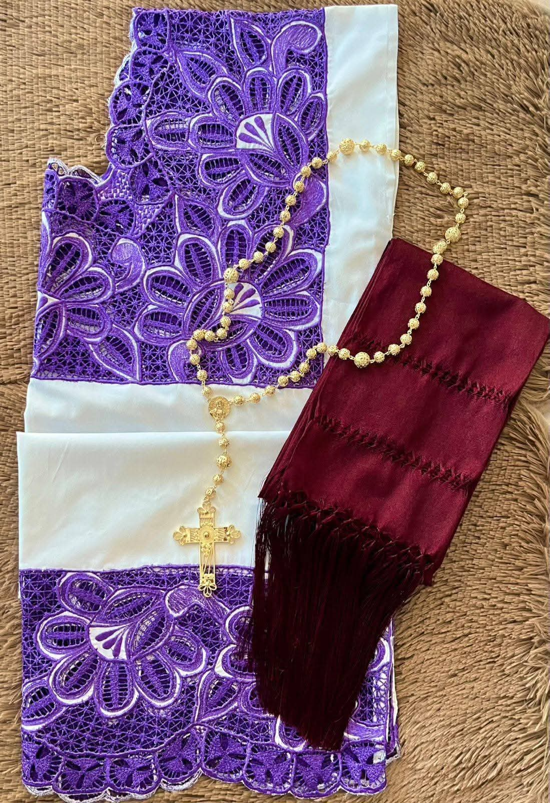
🪡 Especialidad: Punto de cruz
Historia e información pendiente de la entrevista.
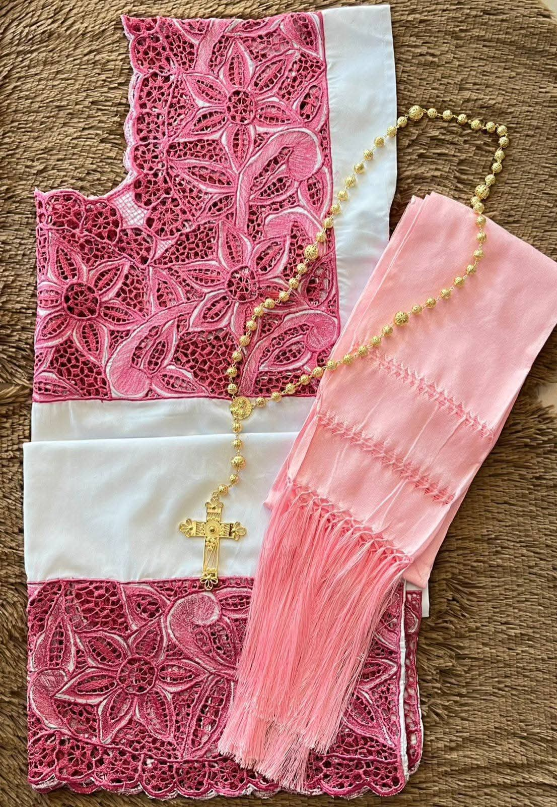
🌺 Especialidad: Bordado floral
Historia e información pendiente de la entrevista.
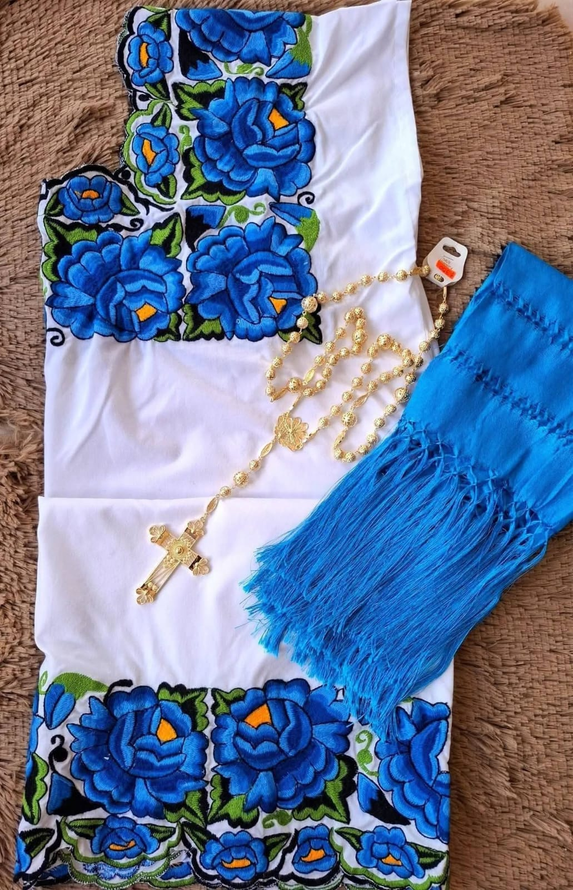
🧵 Especialidad: Huipiles tradicionales
Historia e información pendiente de la entrevista.
Cada huipil y cada blusa representan horas de trabajo, paciencia y conocimientos transmitidos de generación en generación.
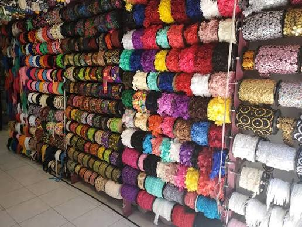
Se eligen cuidadosamente las telas, hilos y materiales que serán utilizados para elaborar la prenda.
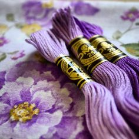
Se define el diseño que dará identidad a la prenda, inspirado en flores, naturaleza y elementos representativos de la región.

Cada puntada se realiza manualmente, requiriendo paciencia, precisión y dedicación.
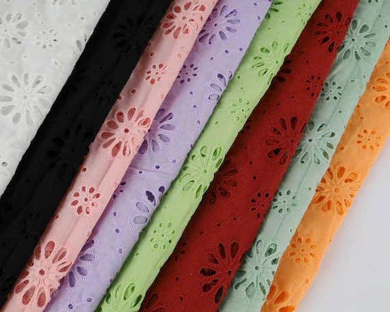
Una vez terminado el bordado, la prenda se confecciona y revisa cuidadosamente.
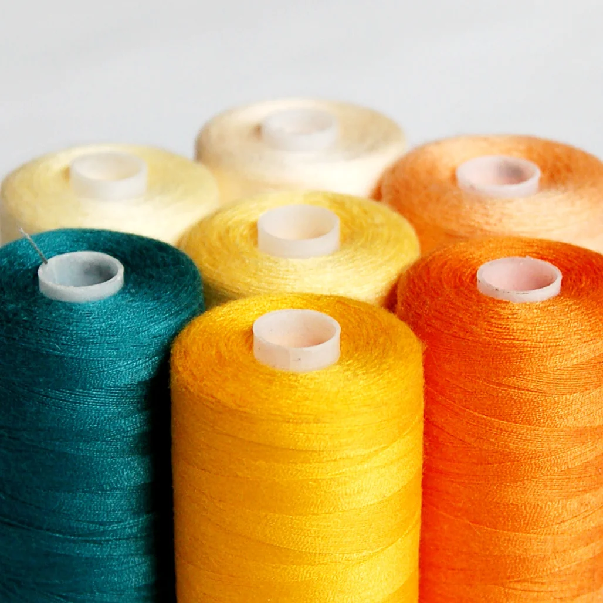
Finalmente la pieza está lista para preservar la cultura y llegar a nuevos hogares.
En esta comunidad del municipio de Felipe Carrillo Puerto, la elaboración de prendas artesanales forma parte de la identidad cultural de muchas familias. Las técnicas tradicionales continúan transmitiéndose de generación en generación, preservando un legado que representa orgullo, historia y tradición.
Felipe Carrillo Puerto, Quintana Roo
Bordado artesanal y cultura maya.
Mujeres que preservan la tradición textil.

Mujeres que mantienen viva una tradición
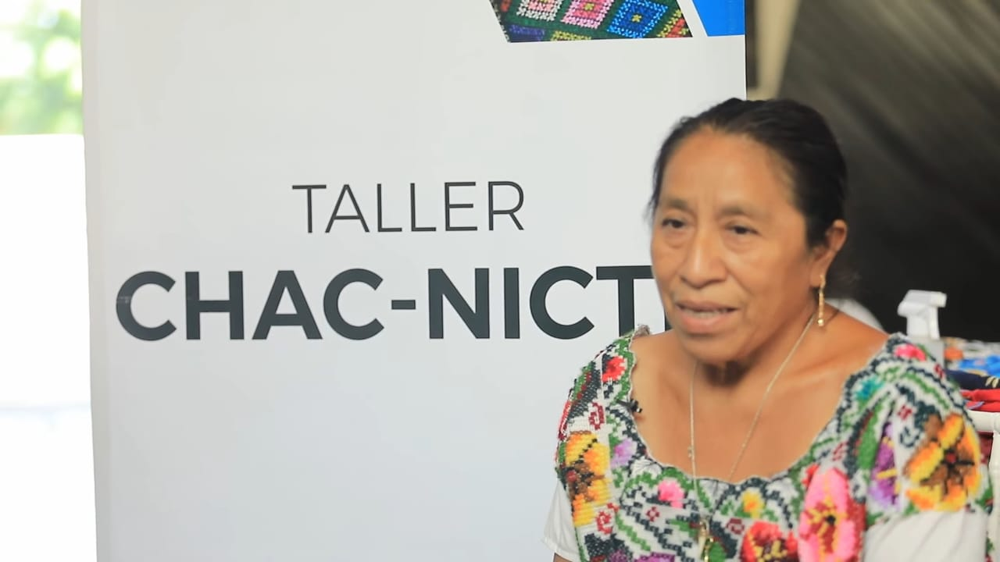
En X-Pichil, mujeres artesanas mantienen vivas técnicas y conocimientos que han sido transmitidos de generación en generación.
Cada bordado requiere tiempo, paciencia y dedicación. Detrás de cada prenda existe una mujer, una historia y una tradición.
Conocer nuestra culturaEl bordado artesanal es una expresión de identidad y memoria cultural.
Cada puntada requiere tiempo, precisión y dedicación.
Los colores y motivos pueden representar elementos de la naturaleza y la identidad cultural.
Los conocimientos artesanales se transmiten entre generaciones.
Un lugar donde las tradiciones, la naturaleza y el trabajo artesanal continúan formando parte de la vida cotidiana de sus habitantes.
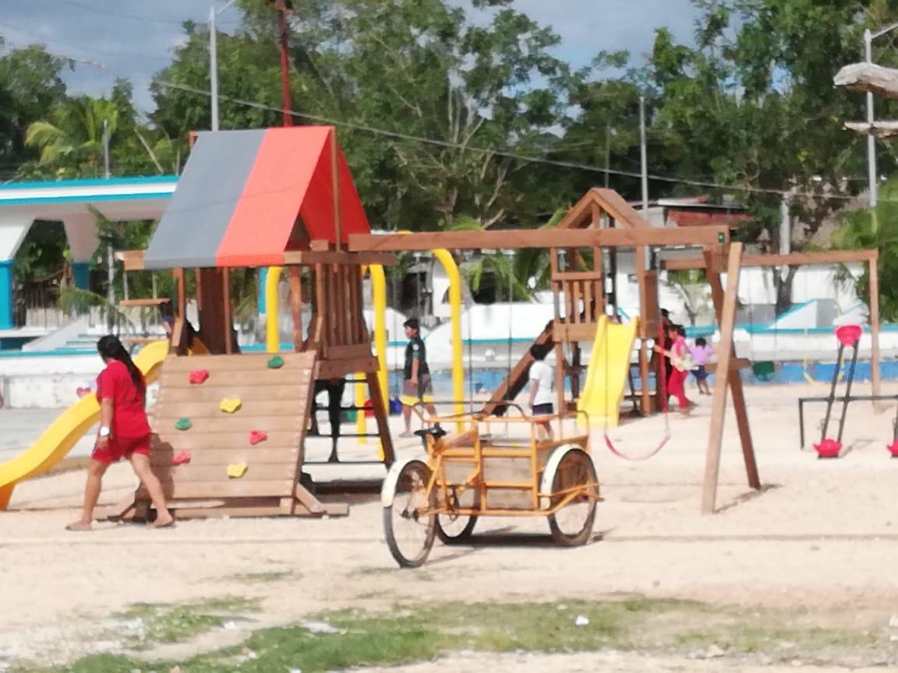
Una comunidad del municipio de Felipe Carrillo Puerto que conserva conocimientos y costumbres transmitidos entre generaciones.
La identidad cultural se refleja en la lengua, las tradiciones y las expresiones artesanales.
El bordado y la confección forman parte del legado que las mujeres artesanas mantienen vivo.
Los colores, flores y elementos naturales de la región inspiran numerosos diseños artesanales.
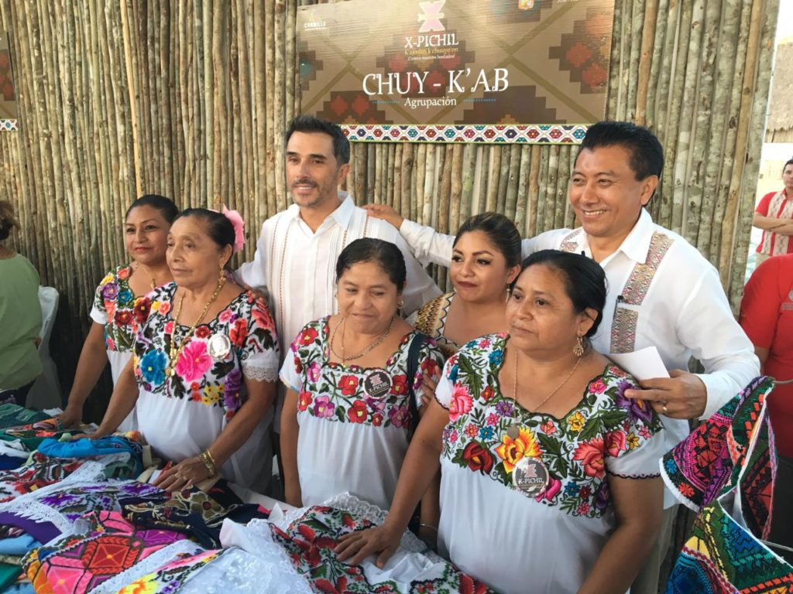
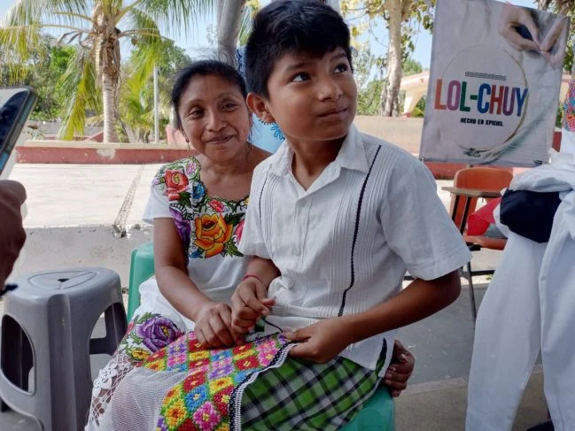
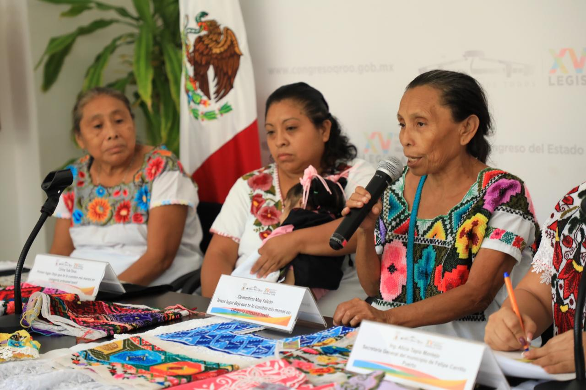
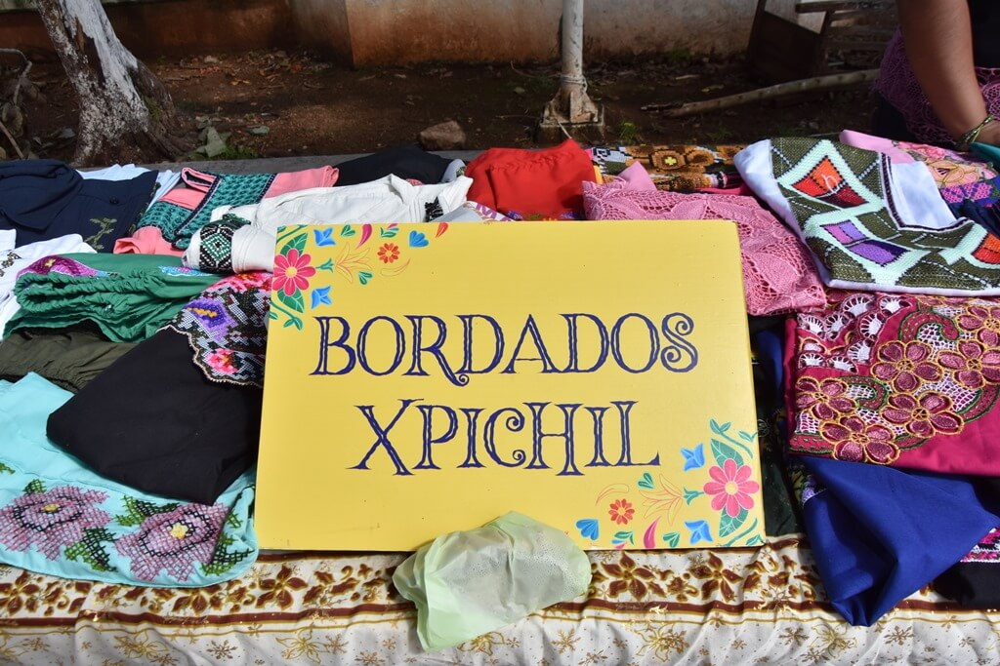
Conoce X-Pichil, la comunidad donde nacen las prendas artesanales y donde las mujeres continúan preservando técnicas, conocimientos e historias transmitidas de generación en generación.
📍 Planifica tu visita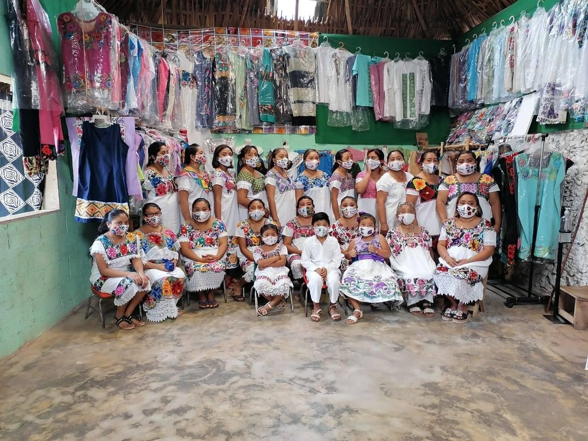
Mujeres artesanas de Chac Nicté, X-Pichil, Quintana Roo.
Detrás de cada bordado hay una historia, una familia y una tradición que continúa viva gracias al esfuerzo, la dedicación y el talento de muchas mujeres artesanas.
Tu interés, tu visita y tu apoyo ayudan a preservar este legado cultural para las futuras generaciones.
Gracias por permitir que nuestro trabajo y nuestra historia lleguen hasta ti.
Las artesanas de Chac Nicté X-Pichil, Quintana Roo.
Tu compra también cuenta una historia.
Contribuyes al reconocimiento del trabajo artesanal.
Ayudas a mantener vivas las tradiciones.
Contribuyes al empoderamiento económico de las mujeres.
¿Te interesa alguna de nuestras prendas o deseas conocer más sobre nuestro trabajo?